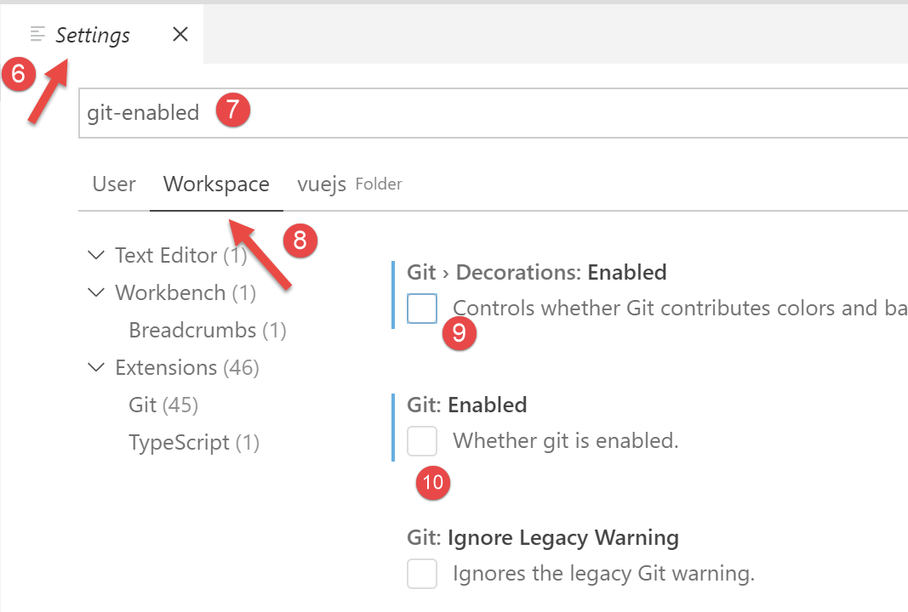

2. إنشاء بيئة عمل
نستعين ببيئة العمل المفصلة في الوثيقة [2]:
- Visual Studio Code (VSCode) لكتابة الأكواد JavaScript؛
- [node.js] لتنفيذها؛
- [npm] لتنزيل وتثبيت المكتبات JavaScript التي سنحتاج إليها؛
نقوم بإنشاء بيئة عمل في [VSCode]:

- في [1-5]، نفتح مجلدًا فارغًا [vuejs] في [VSCode]؛

- في [8-10]، نقوم بتثبيت التبعية [@vue/cli] التي ستسمح لنا بتهيئة مشروع [vue.js]. تجلب هذه التبعية عددًا كبيرًا من الحزم (عدة مئات)؛
في نفس نافذة الأوامر، نكتب بعد ذلك الأمر [vue create .] الذي يطلب إنشاء مشروع [vue.js] في المجلد الحالي (.) :

- في [13]، تبدأ سلسلة من الأسئلة التي تُستخدم لتكوين المشروع؛

- بمجرد الإجابة على جميع الأسئلة، يتم تنزيل حزم جديدة وإنشاء مشروع في المجلد الحالي [14].
لنلقِ نظرة على ما تم إنشاؤه. الملف [package.json] هو كما يلي:
{
"name": "vuejs",
"version": "0.1.0",
"private": true,
"scripts": {
"serve": "vue-cli-service serve vuejs-20/main.js",
"build": "vue-cli-service build vuejs-20/main.js",
"lint": "vue-cli-service lint"
},
"dependencies": {
"axios": "^0.19.0",
"bootstrap": "^4.3.1",
"bootstrap-vue": "^2.0.2",
"core-js": "^2.6.5",
"vue": "^2.6.10",
"vue-router": "^3.1.3",
"vuex": "^3.1.1"
},
"devDependencies": {
"@vue/cli-plugin-babel": "^3.11.0",
"@vue/cli-plugin-eslint": "^3.11.0",
"@vue/cli-service": "^3.11.0",
"babel-eslint": "^10.0.1",
"eslint": "^5.16.0",
"eslint-plugin-vue": "^5.0.0",
"vue-template-compiler": "^2.6.10"
},
"eslintConfig": {
"root": true,
"env": {
"node": true
},
"extends": [
"plugin:vue/essential",
"eslint:recommended"
],
"rules": {},
"parserOptions": {
"parser": "babel-eslint"
}
},
"postcss": {
"plugins": {
"autoprefixer": {}
}
},
"browserslist": [
"> 1%",
"last 2 versions"
]
}
تعليقات
- الأسطر 14-22: في المكتبات المطلوبة للتطوير، نرى إشارات إلى الأداتين [eslint, babel] اللتين استُخدمتا بالفعل في الفصلين السابقين. ويُضاف إلى ذلك المكونات الإضافية الخاصة بهاتين الأداتين والمخصصة للاستخدام داخل [vue.js]؛
- السطر 34: الحزمة [babel-eslint] هي التي ستقوم بعملية التحويل من ES6 إلى ES5 لرموز jS؛
- الأسطر 5-9: تم إنشاء ثلاث مهام [npm]:
- [build]: تُستخدم لإنشاء النسخة المُجمَّعة من المشروع الجاهزة للدخول في مرحلة الإنتاج؛
- [serve]: تُنفذ المشروع على خادم ويب. تُجرى الاختبارات أثناء التطوير باستخدام هذه الأداة. وكما هو الحال مع [webpack-dev-server]، يؤدي أي تعديل في شفرة المصدر للمشروع تلقائيًا إلى إعادة تجميع المشروع وإعادة تحميله بواسطة خادم الويب؛
- [lint]: تُستخدم لتحليل أكواد jS وتقديم التقارير. لن نستخدم هذه الأداة هنا؛
تم إنشاء ملف [README.md] بالمحتوى التالي:
يلخص هذا الملف الأوامر التي يجب استخدامها لإدارة المشروع.
نعلم أنه في ملف [VSCode]، تُعرض مهام [npm] للتنفيذ:

- في [1-3]، نقوم بتنفيذ الأمر [serve] الذي سيقوم بتجميع المشروع [4-5] ثم تنفيذه؛
عند تنفيذ URL و [http://localhost:8080]، نحصل على الصفحة التالية:

سنشرح لاحقًا ما الذي أدى إلى ظهور هذه الصفحة.
لنواصل تهيئة بيئة العمل لدينا:

- في [2] أعلاه، نرى مؤشرات [git]. [git] هو مدير للكود المصدري يتيح إدارة الإصدارات المتتالية منه ومشاركتها بين المطورين. سنقوم بتعطيل هذه الأداة للمشروع؛
- في [3-5]، ننتقل إلى خصائص المشروع؛

- في [9-10]، نقوم بتعطيل استخدام [git] في المشروع؛
سنقوم بكتابة اختبارات متنوعة لإظهار كيفية عمل [vue.js]. لكننا لا نرغب في إنشاء مشروع جديد في كل مرة، لأن ذلك سيتطلب إنشاء مجلد [node_modules] في كل مرة، في حين أن حجم هذا المجلد يصل إلى عدة مئات من الميغابايت. لنعد إلى المهام [npm] في الملف [package.json]:
"scripts": {
"serve": "vue-cli-service serve vuejs-00/main.js",
"build": "vue-cli-service build vuejs-00/main.js",
"lint": "vue-cli-service lint"
},
- السطر 2: يستخدم الأمر [serve] بشكل افتراضي:
- ملف [public/index.html]؛
- المرتبط بالملف [src/main.js]؛
في السطر 2، يمكن تحديد نقطة دخول المشروع في الأمر [serve]، على سبيل المثال:
"serve": "vue-cli-service serve vuejs-00/main.js",
لنجرب:

- في [1]، تمت إعادة تسمية المجلد [src] إلى [vuejs-00]؛
- في [2-3]، تم تعديل الأمر [serve]؛
- في [4-6]، يتم تنفيذ المشروع؛
ونحصل على نفس النتيجة السابقة:

لإجراء اختباراتنا، سنقوم بما يلي:
- كتابة الكود في مجلد [vuejs-xx] التابع للمشروع؛
- اختبار هذا المشروع باستخدام الأمر [vue-cli-service serve vuejs-xx/main.js] في الملف [package.json]؛
عند تشغيل خادم التطوير، يؤدي أي تعديل على أحد ملفات المشروع إلى إعادة التجميع. ولهذا السبب، نقوم بتعطيل الوضع [Auto Save] من [VSCode]. ففي الواقع، لا نريد إعادة التجميع بمجرد كتابة أحرف في أحد ملفات المشروع. لا نريد إعادة التجميع إلا في أوقات معينة:

- في [2]، يجب عدم تحديد الخيار [Auto Save]؛